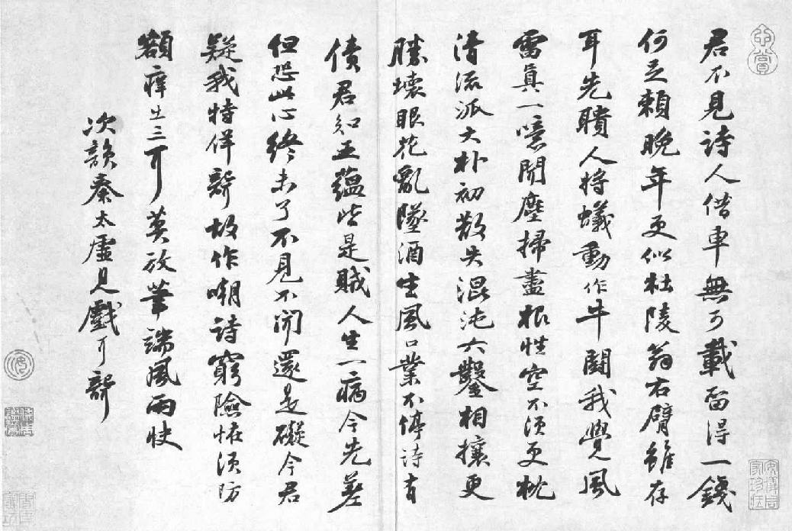
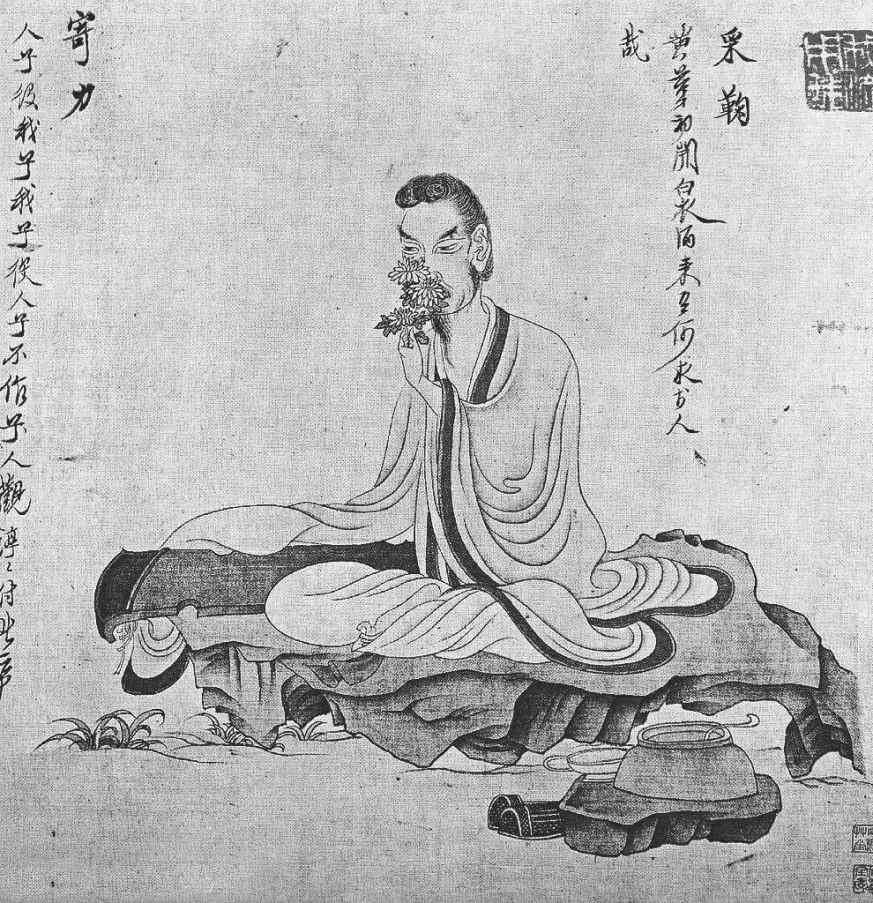

第二十七章 域外
海南岛那时是在宋朝统治之下，但是居民则大多是黎人，在北部沿岸有少数汉人。苏东坡就被贬谪到北部沿岸一带去，这中国文化藩篱之外的地方。元祐大臣数百个受苦难折磨的，只有他一个人贬谪到此处。朝廷当政派为防止元祐诸臣再卷土重来，在那一年及以后数年，决定惩处或贬谪所有与前朝有关联的臣子。苏东坡贬谪到海南岛不久，司马光后代子孙的官爵一律被削除，好多大官都予调职，其中包括苏子由和范纯仁，调往的地方不是南方就是西南，甚至老臣文彦博，已经九十一岁高龄，也没饶过，不过只是削除了几个爵位。打击苏东坡最甚的就是凡受贬谪的臣子，其亲戚家族不得在其附近县境任官职。因为苏迈原在曲江附近为官，现在也丢了官职。
现在苏东坡所有的几乎只有那一栋房子了。按照他名义上的官阶计算，朝廷三年来欠他两百贯当地的钱币，按京都币值计算，是一百五十贯。所欠的官俸既未发下，苏东坡写信给好友广州太守，求他帮忙请税吏付给他。这个朋友王古曾经听苏东坡的话兴建过医院，周济过贫民，可是不久即以“妄赈饥民”的罪名遭上方罢斥了，前面已然提过。苏东坡的欠薪发下与否，已不能稽考。
他现年六十岁，这是按西方计算。到底以后他还流放在外多久，颇难预卜，生还内地之望，甚为渺茫。两个儿子一直陪伴到广州。苏迈在河边向他告别，苏过则将家室留在惠州，陪伴他同到海南。为了到达任所，苏东坡必须溯西江而上，船行数百里到梧州（在现代的广西），然后南转，从雷州半岛渡海。他一到梧州，听说他弟弟子由在往雷州半岛贬谪之处，刚刚经过此地。据揣测说，苏氏兄弟被贬谪到这个地方，是因为他俩的名字与地名相似（子瞻到儋州，子由到雷州），章惇觉得颇有趣味。子由也带了妻子、第三个儿子和三儿媳妇，他们几年来一直和他住在高安。
苏东坡到了梧州附近的藤州，与弟弟子由相遇，而今境况凄凉。当地是个穷地方，兄弟二人到一个小馆子去吃午饭。子由吃惯了讲究的饭食，对那粗糙麦面饼实在难以入口。苏东坡把自己的饼几口吃光，笑着向弟弟说：“这种美味，你还要细嚼烂咽吗？”他们站起身来走出小铺子去，带着家人慢慢向前走，尽可能慢走，因为东坡知道一到雷州，就要立刻渡海了。
雷州太守一向仰慕苏氏兄弟。他予二人盛大欢迎接待，送酒食，结果第二年因此遭受弹劾，调离任所。子由在雷州的住处后来改为一座庙，是他兄弟二人死后，用以纪念他们的。
苏东坡必须出发了，子由送他到海边。离别的前夕，兄弟二人及家人在船上过了一夜。苏东坡的痔疮又发，甚为痛苦，子由劝他戒酒。二人用一部分时间一同作诗，苏东坡试探出子由最小的儿子的诗才。这次离别是生离死别，真是令人黯然销魂，一直愁坐整夜。离别之前，苏东坡给王古写了下面的文句：“某垂老投荒，无复生还之望。昨与长子迈诀，已处置后事矣。今到海南，首当作棺，次便作墓。乃留手疏与诸子，死则葬于海外，……生不挈棺，死不扶柩，此亦东坡之家风也。”
那天，他向先贤祠祈祷。有一个庙，供奉征南二将军的神像。凡是在此风涛险恶之处，过海的旅客都求神谕，决定吉日良辰开船。过去发现神谕无不应验。苏东坡也遵照习俗行事。
在绍圣四年（一〇九七年）六月十一日，苏氏兄弟分手，苏东坡和幼子及雷州太守派的沿途侍奉他的几个兵上了船。航程很短，在此晴朗的天气，苏东坡可以看见岛上山峦的轮廓矗立于天际。他心中思潮起伏。大海对他不像对西方诗人那么富有魔力。实际上，他已经是“眩怀丧魄”了。但是一路平安无事。登岸之后，苏东坡父子向西北岸的儋州目的地前进，七月二日到达。
他到达不久，一位很好的县官张中就到了。张中不但对苏东坡这位诗人佩服得五体投地，而且他本人又是个围棋高手。他和苏过后来成了莫逆之交。二人常常终日下棋，苏东坡在旁观战。由于张中的热诚招待，苏东坡就住在张中公馆旁边的一所官舍里。不过也是一所小旧房子，秋雨一来，房顶就漏，所以夜里苏东坡得把床东移西移。因为是官家的房子，张中用公款修缮一番，后来因此为他招了麻烦。
由中国人看来，海南岛根本不适于人居住。在夏天极其潮湿、气闷，冬天雾气很重。秋雨连绵，一切东西无不发霉。一次苏东坡看见好多白蚁死在他的床柱上。这种有害于人的气候颇使人想到长生之道。苏东坡写过下面一段文字：
岭南天气卑湿，地气蒸溽，而海南为甚。夏秋之交，物无不腐坏者。人非金石，其何能久？然儋耳颇有老人，年百余岁者往往而是，八九十者不论也。乃知寿夭无定，习而安之，则冰蚕火鼠，皆可以生。吾尝湛然无思，寓此觉于物表，使折胶之寒无所施其冽，流金之暑无所措其毒，百余岁岂足道哉！彼愚老人者初不知此，特如蚕鼠生于其中，兀然受之而已。一呼之温，一吸之凉，相续无有间断，虽长生可也。
在海岸上的市镇之外，岛内居住的黎族与内地的移民相处并不融洽。他们住在热带的山上，后来在日军偷袭珍珠港之前，他们为日本效力，训练丛林战术。本地人不能读书写字，但规矩老实，常受狡诈的汉人欺骗。他们懒于耕种，以打猎为生。像在四川或福建的一部分地方一样，他们也是妇女操作，男人在家照顾孩子。黎民的妇人在丛林中砍柴，背到市镇去卖。所有的金属用具，如斧子、刀，以及五谷、布、盐、咸菜，都自内地输入。他们用乌龟壳和沉水香来交换，沉水香是中国应用甚广的有名薰香，甚至米也自内地输入，因为当地人只吃芋头喝白水当作饭食。在冬天自大陆运米船不到时，苏东坡也得以此维持生活。
当地居民非常迷信，患病时由术士看病，没有医生。土人治病的唯一办法是在庙中祷告，杀牛以祭神。结果，每年由大陆运进不少的牛专为祭神之用。苏东坡是佛教徒，设法改变此一风俗，但风俗改变谈何容易，他曾写过下列文字：
岭外俗皆恬杀牛，而海南为甚。客自高化载牛渡海，百尾一舟，遇风不顺，渴饥相倚以死者无数。牛登舟皆哀鸣出涕。既至海南，耕者与屠者常相半。病不饮药，但杀牛以祷，富者至杀十数牛。死者不复云，幸而不死，即归德于巫。以巫为医，以牛为药。间有饮药者，巫辄云：“神怒，病不可复治。”亲戚皆为却药禁医，不得入门，人牛皆死而后已。地产沈水香，香必以牛易之黎。黎人得牛，皆以祭鬼，无脱者。中国人以沈水香供佛，燎帝求福，此皆烧牛肉也，何福之能得？
内地人始终不能征服那些丛林中的居民。官兵一到，他们只要退入丛林中，官兵根本不想到山中居住，自然不肯深入。黎民有时因与汉人有争吵纠纷，也偶会进袭市镇。有时为商人所欺，在衙门得不到公道审判，他们唯一的办法就是把此人捉住不放，然后将金钱索回。苏过后来写了一篇两千字长文，论此种情形，并表示对此丛林蛮族无法征服，只有公平相待，公正管理。他认为此等土著是老实规矩的百姓，因为官府不替他们主持公道，他们才被迫而自行执法。
这次到海南岛，以身体的折磨加之于老年人身上，这才是流放。据苏东坡说，在岛上可以说要什么没有什么。他说：“此间食无肉，病无药，居无室，出无友，冬无炭，夏无寒泉，然亦未易悉数，大率皆无耳。唯有一幸，无甚瘴也。”
但是他那不屈不挠的精神和达观的人生哲学，却不许他失去人生的快乐。他写信给朋友说：“尚有此身，付与造物，听其运转，流行坎止，无不可者。故人知之，免忧。”使章惇和苏东坡的其他敌人烦恼的，是他们竟无奈苏东坡何。在哲宗元符元年（一〇九八年）九月十二日，他在日记中写自己的坎坷说：
吾始至南海，环视天水无际，凄然伤之，曰：“何时得出此岛耶？”已而思之：天地在积水中，九州在大瀛海中，中国在少海中，有生孰不在岛者？覆盆水于地，芥浮于水，蚁附于芥，茫然不知所济。少焉，水涸，蚁即径去，见其类出涕，曰：“几不复与子相见。”岂知俯仰之间，有方轨八达之路乎！念此，可以一笑。戊寅九月十二日，与客饮薄酒，小醉，信笔书此纸。
苏东坡也许是固执，也许真是克己自制，至少也从未失去那份诙谐轻松。僧人参寥派一个小沙弥到海南岛去看他，带有一封信和礼品，并说要亲身去探望。苏东坡回信说：“某到贬所半年，凡百粗遣，更不能细说。大略只似灵隐天竺和尚退院后，却住一个小村院子，折足铛中， 糙米饭便吃，便过一生也得。其余，瘴疠病人。北方何尝不病，是病皆死得人，何必瘴气？但苦无医药。京师国医手里，死汉尤多。参寥闻此一笑，当不复忧我也。故人相知者，即以此语之。”
他在此岛上的人生态度，也许在他贬居此地最后一年，在杂记中所写的那段话表现得最清楚：
己卯上元，余在儋耳，有老书生数人来过，曰：“良月佳夜，先生能一出乎？”予欣然从之。步城西，入僧舍，历小巷，民夷杂揉，屠酤纷然，归舍已三鼓矣。舍中掩关熟寝，已再鼾矣。放杖而笑，孰为得失？过问先生何笑，盖自笑也。然亦笑韩退之钓鱼，无得更欲远去。不知钓者，未必得大鱼也。
苏东坡一次对他弟弟说：“我上可以陪玉皇大帝，下可以陪卑田院乞儿。在我眼中天下没有一个不是好人。”现在他就和默默无名的读书人、匹夫匹妇相往还。和这些老实人在一起，他无须乎言语谨慎，他可以完全自由，可以名士本色示人。他从没有一天没有客人，若是没人去看他，他会出去看邻居。像以前在黄州一样，他与身份高身份低的各色人，读书人、农夫等相交往。闲谈时，他常是席地而坐。他只是以闲谈为乐，但是他也愿听别人说话。他带着一条海南种的大狗“乌嘴”，随意到处游逛。和村民在槟榔树下一坐，就畅谈起来。那些无知的穷庄稼汉能对他说什么呢？庄稼汉震于他的学识渊博，只能说：“我们不知道说什么。”苏东坡说：“那就谈鬼。好，告诉我几个鬼故事。”那些人说并不知道什么有趣的鬼故事。苏东坡说：“没关系，随便说你听到的就行。”后来苏过告诉他的朋友说，他父亲若一天没有客人来，他就觉得父亲好像不舒服。
甚至于在如此地远天偏的地方，那群政敌小人也不让他安静消停。元符元年（一〇九八年）是迫害老臣雷厉风行的一年。在绍圣四年（一〇九七年），快到旧年除夕了，两个元祐大官在七天之内先后死亡，情况可疑。在春天，那两个官员的子女也遭监禁，老太皇太后的秘书也处了死刑。所有遭贬谪的官员，又都调迁地方。那年夏天遭到调迁的官员之中，有苏子由、秦观、郑侠，我们还记得郑侠就是献图推翻王安石的宫门小吏。三月，神奇道士吴复古又在海南岛出现，和苏东坡住了几个月。他带来的消息是，朝廷派董必来视察并报告受贬谪的大臣的情形，如有必要，再弹劾起诉。那时儋州隶属广西省。最初朝廷打算派吕升卿到广西（吕升卿是恶迹昭彰的元祐大臣的死敌吕惠卿的弟弟）。对苏氏兄弟来说，吕升卿一来，他俩不死也要脱层皮。但是曾布和另一个官员劝阻皇帝，说吕升卿必不能从公禀报，必致激起私仇大恨。那样，朝廷就是超乎极端了。因此一劝，吕升卿改派到广东，董必派到广西。果不出所料，董必找出了纰漏，他说苏子由强占民房，雷州太守厚待罪臣并善予照顾。太守乃遭撤职，苏子由改调到惠州以东地区，当年苏东坡曾谪居在惠州。
董必要自雷州半岛到海南，就如瘟神下降，但是他的副手彭子民对他说：“别忘记你也有子孙。”董必听了遂停止不去，只派下属过海，查看苏东坡的情形。那个官员发现苏东坡住在官舍里，颇受县官张中优待，张中后来遂遭革职。
苏东坡被从官舍逐出，必须用仅有的一点钱搭个陋室居住。他住的地方是城南一片槟榔林。当地的居民，尤其是那些穷读书人的子弟，亲自动手帮助他盖房子。那是一栋简陋的房子，面积是五间大，但大概只盖了三间。他名此新居“桄榔庵”。房后就是槟榔林。夜里躺在床上，能听见黎民猎鹿的声音，鹿在那个地区为数甚多。有时早晨有猎人叩门，以鹿肉相赠。在五月他给朋友写信说：“初至，僦官屋数椽，近复遭迫逐，不免买地结茅，仅免露处，而囊为一空。困厄之中，何所不有？置之不足道也，聊为一笑而已。”
《次韵秦太虚见戏耳聋诗帖》 书法 苏东坡 宋 台北故宫博物院藏
秦观（1049—1100），字太虚、少游，号邗沟居士，学者称淮海先生。他与黄庭坚、晁补之、张耒号称“苏门四学士”，颇得苏东坡赏识。秦观生性豪爽，洒脱不拘，溢于文辞。政治上倾向旧党，哲宗时“新党”执政，被贬为监处州酒税，后徙郴州，编管横州，又徙雷州，至藤州而卒。
苏东坡很少恨别人，但他至少不喜爱董必。他必须向把自己赶出屋去的这个朝廷官员开个玩笑。“必”字在中文其音同“鳖”。他写了一篇寓言，最后提到鳖相公。有一次，东坡喝醉，这篇故事就这样开始。有鱼头水怪奉龙王之命，前来把东坡拉往海中。他去时身穿道袍，头戴黄帽，足蹬道履，不久便觉行于水下。忽然雷声隆隆，海水沸腾。突然强光一闪，他发现自己已经站在水晶宫中。像通常所说的龙宫一样，龙宫中有好多珠宝、珊瑚、玛瑙，及其他宝石等物，真是精工点缀，琳琅满目。不久，龙王盛装而出，二宫女随侍。苏东坡问有何吩咐。不久，龙后自屏风后出来，递给他一块绢，有十尺长，求他在上面写诗一首。对苏东坡而言，再没有比作诗容易的事。他在绢上画了水国风光和水晶宫的霞光瑞气。他写完诗，各水中精灵都围着看。虾兵蟹将莫不赞美连声。鳖相公当时也在。他迈步走出，向龙王指出东坡诗内有一个字，是龙王的名字，应当避圣讳。龙王一听，对苏东坡大怒。苏东坡退而叹曰：“到处被（鳖）相公厮坏！”
苏东坡写了三四个寓言故事，但是中国文人写的想象故事直到十三世纪才真有发展，苏东坡写的也和唐宋寓言作家一样，都是明显的道德教条加上微薄的一点儿想象而已。在他自己盖了几间陋室之后的两年半期间，他过的倒是轻松自在的日子，只是一贫如洗而已。他有两个颇不俗气的朋友，一个是为他转信的广州道士何德顺，另一个是供给他食物、药物、米、咸菜的谦逊读书人。夏天的热带海岛上，因为潮湿的缘故，人是很受煎熬。苏东坡只有静坐在槟榔林中，一天一天地数，直到秋季来临为止。秋季多雨，因为风雨太多，自广州、福建来的船只都已停航。食粮不继，连稻米都不可得。苏东坡真个一筹莫展。在哲宗元符元年（一〇九八年）冬天，他给朋友写信说他和儿子“相对如两苦行僧尔”。那年冬天，一点儿食物接济也没有，父子二人直有饥饿之虞。他又采用煮青菜的老办法，开始煮苍耳为食。
他曾在杂记中写食阳光止饿办法，不知是认真还是俚戏。人人知道，道家要决心脱离此一世界时，往往忍饥不食而自行饿死。苏东坡在杂记《辟谷说》中说了一个故事。他说洛阳有一人，一次坠入深坑，其中有蛇有青蛙。那个人注意到，在黎明之时，这等动物都将头转向从缝隙中射的太阳光，而且好像将阳光吞食下去。此人既饥饿又好奇，也试着模仿动物吞食阳光的动作，饥饿之感竟而消失。后来此人遇救，竟不再知饥饿为何事。苏东坡说：“此法甚易知易行，天下莫能知，知者莫能行，何则？虚一而静者，世无有也。元符二年，儋耳米贵，吾方有绝粮之忧，欲与过子共行此法，故书以授之。四月十九日记。”
实际上，苏东坡不必挨饿，他的好朋友、好邻居也不会让他挨饿，他似乎是过得蛮轻松。有一天，他在头上顶着一个大西瓜，在田地里边唱边走时，一个七十多岁的老太婆向他说：“翰林大人，你过去在朝当大官，现在想来，是不是像一场春梦？”此后苏东坡就称她“春梦婆”。他有时在朋友家遇到下雨，就借那家庄稼汉的斗笠、蓑衣、木屐，在泥水路上溅泥蹚水而归。狗见而吠，邻人大笑吼叫。他一遇有机会，还继续月下漫步的老习惯。有时他和儿子到六里以外西北海边，那里有一块儿巨大的岩石，像一个和尚面海而望。好多船在那里失事，本地人就说那块岩石有什么灵异。那块岩石下面长了许多荔枝树、橘子树，在那里正好摘水果吃。但是倘若有人打算摘得吃不了，要带着走，立刻就风涛大作。苏东坡一向对僧人很厚道，但是他不喜欢儋州一带的和尚，因为他们有妻子，并且和别的女人有暧昧情事。住在儋州时，他曾写文章讽刺此事。那篇文章的题目是《李氏子再生说冥间事》。据说是真有其人。那篇文章如下：
余在儋耳，闻城西民李氏处子病卒两日复生。余与进士何旻同往见其父，问死生状。云：初昏，若有人引去，至官府幕下。有言：“此误追。”庭下一吏云：“可且寄禁。”又一吏云：“此无罪，当放还。”见狱在地窟中，隧而出入。系者皆儋人，僧居十六七。有一妪身皆黄毛如驴马，械而坐，处子识之，盖儋僧之室也。曰：“吾坐用檀越钱物，已三易毛矣。”又一僧亦处子邻里，死已二年矣，其家方大祥，有人持盘餐及钱数千，云：“付某僧。”僧得钱，分数百遗门者，乃持饭入门去，系者皆争取其饭。僧饭，所食无几。又一僧至，见者擎跪作礼。僧曰：“此女可差人速送还。”送者以手擘墙壁使过，复见一河，有舟，使登之。送者以手推舟，舟跃，处子惊而寤。是僧岂所谓地藏菩萨耶？书此为世戒。
这几年，过是父亲时刻不离的伴侣。据苏东坡说，像过那样的好儿子实在是至矣尽矣，蔑以加矣。他不但做一切家中琐事，也是父亲的好秘书。在如此高明的父亲指导之下，过很快便成了诗人、画家。在苏东坡的三个儿子之中，过成了一个有相当地位的文学家，他的作品已然流传到今日。他遵守父命，受了父亲当年在祖父教导下的教育。他有一次将《唐书》抄写一遍，以资记忆。此后，又抄写《汉书》。苏东坡博闻强记，他把读过的这些古史每一行都记得。有时他倚在躺椅上听儿子诵读这些书，偶尔会指出某些古代文人生平的相似细节，而评论之。
他们颇以无好笔好纸为苦，但仅以手中所有的纸笔，过也学着画些竹石冬景。大概二十年后，过到京都游历，在一座寺院里小停，几个宫廷中的兵卒忽然到来，抬着一顶小轿，要他进宫陛见徽宗皇帝。苏过完全不知是何缘故，只得遵命。一进轿，轿帘子即刻放下，所以他看不见是往何处去。轿上无顶，有人持一大阳伞遮盖。他觉得走得很快，大概过了四五里，到了一个地方。他走出轿来，见自己立在走廊之下，有人过来引他到一座极美的大殿。他一进去，看见皇帝坐在里面，身穿黄袍，头戴镶有绿玉的帽子。皇帝周围有一群宫女环绕，穿得极为艳丽。他觉得那样美的宫女为数不少，但是不敢抬头看。当时虽然是六月，殿中极为清凉。屋里有巨大冰块堆积，点燃的妙香气味弥漫在空气之中。他想自己必是在一座宫殿里。施礼问安毕，皇帝对他说：“我听说你是苏轼之子，善绘岩石。这是一座新殿，我希望你在墙壁上绘画，因此请你前来。”
苏过倒吸了一口气。徽宗自己就是一位大画家，他的作品至今仍在。苏过再拜之后，开始在墙壁上作画，这时皇帝离座下来，站着看他动手。画完之后，皇帝再三赞美。告诉宫女送苏过美酒一杯，还有好多珍贵礼品。苏过自御前退出之后，又在走廊之下乘轿出宫，在路上仍然轿帘低垂。到家之后，刚才的经历恍惚如梦。
岛上难得好墨，苏东坡自己试制。苏过后来说他父亲险些把房子烧掉。这个故事与杭州一名制墨专家有关系。这家制墨人所卖的墨价高出别家两三倍，他说他是在海南岛跟苏东坡学的制墨秘法。有些文人向苏过打听他父亲制墨的方法。苏过笑道：“家父并无何制墨秘诀。在海南岛无事时，以此为消遣而已。一天，名制墨家潘衡来访，家父即开始和他在一间小屋里制墨。烧松脂制黑烟灰。到半夜，那间屋子起了火，差点儿把房子烧掉。第二天，我们从焦黑的残物中弄到几两黑烟灰。但是我们没有胶，父亲就用牛皮胶和黑烟灰混合起来。但是凝固不好，我们只得到几十条像手指头大的墨。父亲大笑一阵。不久潘先生走了。”不过，在苏过叙述这件往事时，潘衡这家商店的墨已经很好了。显然他是从别人学得的制墨秘诀，而不是跟苏东坡学的，只是借苏东坡的名气卖墨而已。
现在苏东坡空闲无事，却养成到乡野采药的习惯，并考订药的种类。他考订出来一种药草在古医书上是用别的名字提到过，别人从未找到，而他发现了，自然十分得意。在他写的各医学笔记中，有一种药可以一提，那就是用荨麻治风湿的办法，荨麻含有荨麻素和黄体素，像毒藤一样，皮肤碰到就肿疼。他说把荨麻敷在风湿初起的关节上，浑身其他关节的疼痛都可以停止。他还深信苍耳的功用。苍耳极为普通，各处都长，毫无害处，吃多久都可以，怎么吃法亦无不可。（此种植物含有脂肪、少量树脂、维生素C和苍耳苷。）他告诉人把此植物制成白粉末的办法。方法是，在文火上，把此种植物的叶子灰加热约二十四小时，即可。此白色粉末，若内服，能使皮肤软滑如玉。他还有些笔记提到蔓菁、芦菔和苦荠。他称这些东西是“葛天氏之遗民”的美食，营养高，味道好。
除去忙这些事之外，他还在儿子帮助下整理杂记文稿，成了《东坡志林》。过去他和弟弟子由分别为五经做注。他担任两部。在黄州谪居时，他已经注完《易经》和《论语》。现在在海南，他注完了《尚书》。最为了不起的是他的和陶诗一百二十四首。他在颍州时就开始此项工作，但是到惠州后，在被迫之下度田园生活，他觉得自己的生活与陶潜当年的生活，可谓无独有偶，完全相似，他又极其仰慕陶潜。离开惠州之时，他已经写了一百零九首，还只剩下最后十五首没有和，这十五首是在海南岛完成的。他要子由给这些诗写一篇序言，在信里说：“然吾于渊明，岂独好其诗也哉！如其为人，实有感焉。”他觉得他与陶潜的为人也颇相似，许多仰慕苏东坡的人当必有同感。
《陶渊明故事图·采菊》 中国画 陈洪绶 明
陶渊明（约365—427），名潜，字元亮，自号五柳先生。他的诗文充满了田园气息，他的名士风范和对生活简朴的热爱影响了一代又一代的中国文人。苏东坡曾这样评价陶渊明：“欲仕则仕，不以求之为嫌；欲隐则隐，不以去之为高。饥则扣门而乞食，饱则鸡黍以延客。古今贤之，贵其真也。”